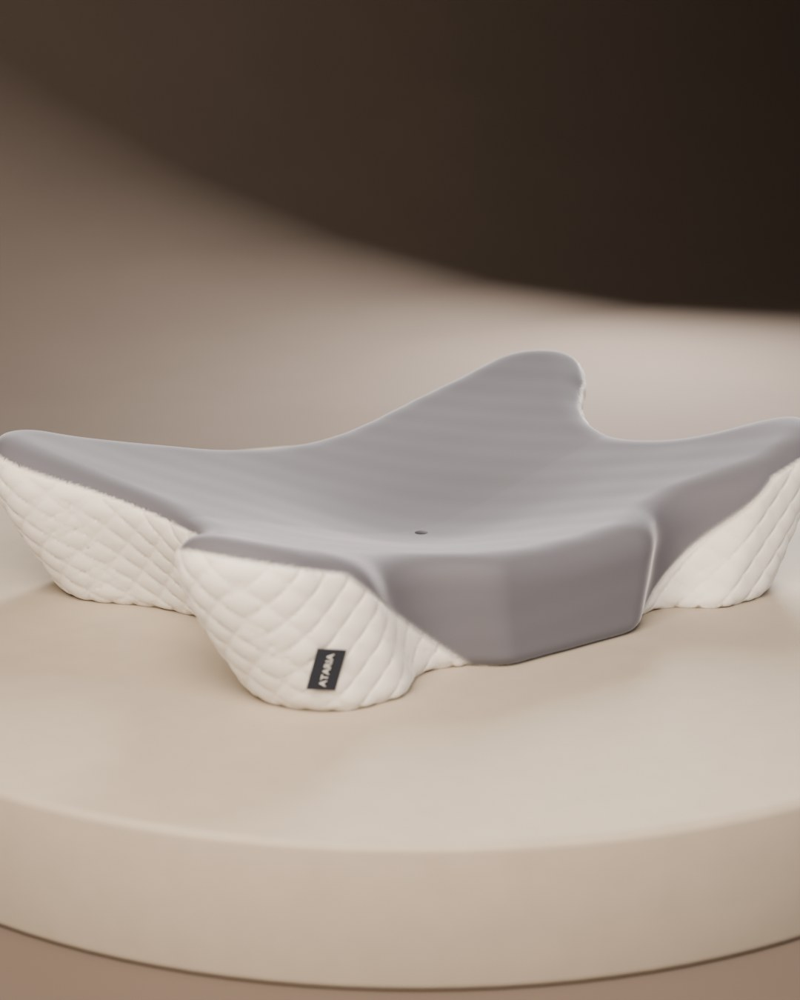
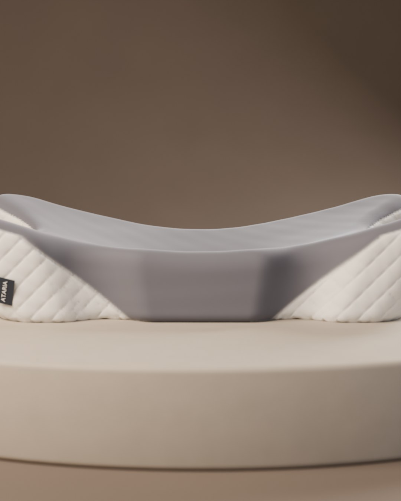
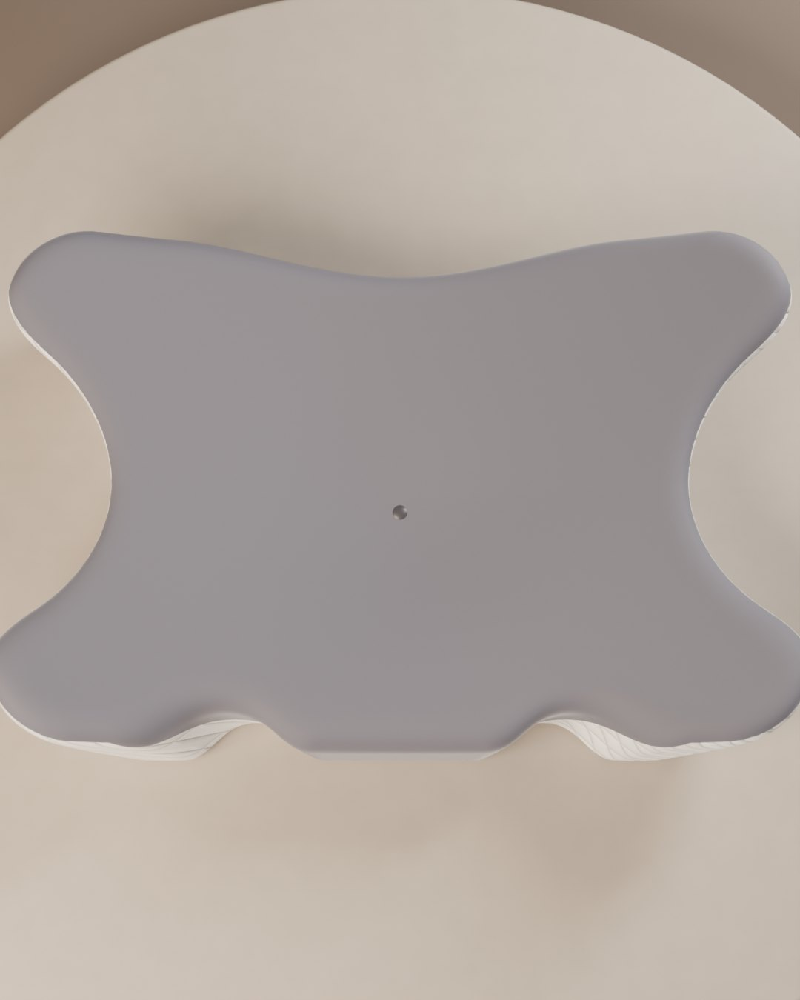

Разбор по вашим выгрузкам Kaspi, двум рабочим чатам и рынку: США, Wildberries, Bork. Здесь то, что продаёт, то, что тратит деньги, и план на 30 дней с разделением, кто что делает.
| Сентябрь 2026 | ₸ | Комментарий |
|---|---|---|
| Выручка | 10 008 630 | |
| Маркетинг | 2 500 196 | 25% выручки |
| Чистая прибыль | 1 447 450 | 14,5% |
| Подушки, прибыль после рекламы | 696 664 | 22% выручки |
| Комбайн, прибыль после рекламы | 664 832 | 11,6%: реклама 26% |
| Измельчители | 85 936 | 9% |
Источник: чаты «Каспи», «Анализ продаж по товарам», «Инвестиционный план». Около 1 750 заказов по 250–1 000 ₸ из Айета и Шетпе (самовыкупы) и товары брата в цифры не входят.
Ролики-лидеры набрали от 0,5 до 18 млн просмотров у аккаунтов с 5–65 тыс. подписчиков. Ни один из них не «красивый». Все объясняют боль:
Миксер сам по себе никому не интересен. Интересна еда и время:
Bork тоже не производит сам, всё делают OEM-заводы. Премиум он строит дизайном, металлом в корпусе, своими бутиками и одним визуальным языком во всём. Для Ataria это тот же путь: свой завод не нужен, нужен единый стиль, который оправдывает цену.
У DTC-брендов есть «100 ночей на пробу» как снятие риска, комплекты из двух штук и скидка новому клиенту. Продавцы Wildberries ведут внешний трафик на карточку: это поднимает её в поиске, и органика начинает продавать сама.
Студийные 3D-кадры товара, медленные пролёты камеры, люди в дорогом, но живом интерьере. Это сетка Instagram, сайт, карточки Kaspi, упаковка. Задача: чтобы 13–17 тыс. ₸ за подушку и 130 тыс. ₸ за машину казались нормальной ценой.
Короткие ролики про боль и решение: шея, сон, тесто, время на кухне. Снимаются на телефон, людьми, по проверенным хукам из США. Именно они идут в рекламу и к блогерам.
ИИ-видео каждый раз заново угадывает форму подушки, поэтому она «плывёт». Я построил точную 3D-модель подушки №1 по вашим фото (620×410 мм, крылья 13 см, серый бархатный верх, белые стёганые бока, кнопка). Теперь товар в кадре всегда один и тот же, а камеру, свет и фон можно менять сколько угодно. ИИ остаётся для сцен с людьми, но только как фон, без крупных планов товара.



Вторая версия модели: объёмная стёжка «ромб», шов между серым и белым, бирка ATARIA, лёгкие складки ткани. Облёт камеры пока снят с первой версии. Дальше: молния, нажатие на пену, 3D-анимация шеи. Потом та же схема для AT-SM23.
3D-набор подушки: 10 кадров и 5 роликов в стиле Bork. Сценарии 10 продающих роликов по хукам из США на русском и казахском. Тексты бота для директа.
ВыДать номер для WhatsApp-бота. Подключить ManyChat к Instagram.
Карточки Kaspi из 3D-кадров. Реклама в Meta: 3 ролика × 2 аудитории, 4 000 ₸ в день на тест.
Вы или менеджерСнять на телефон 5 роликов по моим сценариям: дома, с живым человеком. Отправить подушки 10 микроблогерам.
Отключаю ролики, которые не окупаются, и масштабирую лучший. Рецептный контент для AT-SM23: беш, манты, баурсаки.
МенеджерОтвечает в директе и WhatsApp по моим скриптам, ведёт таблицу клиентов.
Первая рассылка покупателям: отзыв и вторая подушка. Отчёт за месяц и план на ноябрь (Чёрная пятница, Новый год).
ВыРешение по бюджету на декабрь.
| Показатель | Цель на ноябрь |
|---|---|
| Доля рекламы в выручке (Kaspi + внешняя) | с 25% до 18% |
| Стоимость одного покупателя из Instagram | до 2 500 ₸ за подушку, до 12 000 ₸ за комбайн |
| Заявки в директ по кодовому слову | от 30 в день |
| Клиенты в своей базе (телефон) | от 300 |
| Отмены «передумал» | в 2 раза меньше |
Цели предварительные. Уточню их после первой недели теста рекламы.